Chiusura movimento
Al termine dell'inserimento dei dati, quando viene premuto il tasto
F10 oppure il pulsante Salva nella tool bar compare, se configurato, la
finestra di conferma della registrazione. Se sono presenti dei voucher
validi ed utilizzabili alla data, o per cliente o generici e non è stato
inserito nessun codice voucher da utilizzare ed è configurata l'apertura
automatica o è configurata l'apertura su richiesta ed è stato premuto
il tasto di attivazione, si apre la finestra di acquisizione codici a
barre dei voucher.
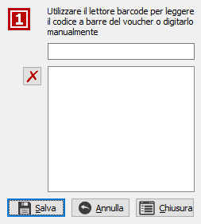
In questa finestra è possibile inserire uno o più codici a barre di
voucher da portare in detrazione sulla vendita; il pulsante con la X consente
di eliminare un voucher letto dall'elenco. Premendo il pulsante Salva
si accede alla selezione definitiva dei voucher da utilizzare; il pulsante
Chiusura si comporta come il pulsante Annulla, quindi non considera quanto
inserito nella finestra corrente, ma salta la finestra di selezione e
si passa direttamente alla finestra di chiusura del movimento.
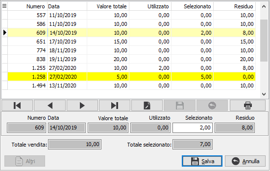
A questa finestra si accede in chiusura dei movimenti in modo automatico
o tramite pulsante di attivazione in base a come configurato, se presenti
voucher validi, sia che si siano selezionati tramite le righe o la finestra
precedente, sia che non sia stato preselezionato nessun voucher; nel caso
di nessun voucher preselezionato saranno visibili tutti i voucher validi,
altrimenti saranno presenti solo i preselezionati e sarà attivo il pulsante
Altri se presenti anche altri voucher utilizzabili per la vendita, la
cui pressione inserirà questi altri voucher nella griglia per essere eventualmente
selezionati. è possibile
selezionare e deselezionare i voucher oppure inserire un valore parziale
nel campo Selezionato; al salvataggio la somma dei voucher utilizzati
sarà visibile nella finestra di chiusura nella casella "Tot. voucher".
Se si annulla la chiusura e non sono presenti voucher preselezionati tutte
le selezioni fatte dalla finestra voucher andranno perse. è
disponibile il pulsante Stampa che consente di effettuare la stampa in
formato laser del voucher selezionato.
Prima del salvataggio definitivo vengono ricercate eventuali promozioni
legate ai prodotti oppure all'eventuale tessera fedeltà utilizzata. Da
questa elaborazione possono derivare riduzioni del totale scontrino dovute
a promozioni specifiche o possono essere aggiunti sconti a valore, che
compariranno nella casella Abbuono, modificabile dall'utente, oppure sconti
in percentuali che compariranno nella casella Bonus sconto e non sono
modificabili. Se si tratta di un pagamento in contanti ed è presente e
correttamente compilata la tabella degli arrotondamenti sarà compilato
anche il relativo campo che non è modificabile dall'operatore.
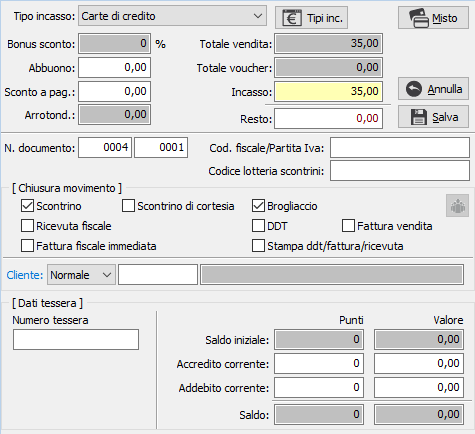
TIPO INCASSO: definisce
la tipologia di incasso: contanti, assegni, bancomat, carta di credito,
ticket, pagamento sospeso o movimento interno. Questo ultimo tipo consente
di effettuare successivamente al salvataggio la modifica dei totali del
movimento, tramite l'apposito  pulsante, per definire
il tipo di incasso del movimento interno, che altrimenti sarà definito
in fase di generazione fattura. Il movimento interno può solo essere stampato
sul brogliaccio. Le tipologie di incasso possono non essere tutte presenti
in base a quali sono attive in configurazione e/o per la cassa utilizzata.
pulsante, per definire
il tipo di incasso del movimento interno, che altrimenti sarà definito
in fase di generazione fattura. Il movimento interno può solo essere stampato
sul brogliaccio. Le tipologie di incasso possono non essere tutte presenti
in base a quali sono attive in configurazione e/o per la cassa utilizzata.
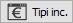
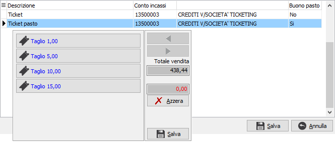
Se
per la modalità di chiusura scelta sono presenti più tipologie è possibile
selezionare tramite questo pulsante quale tipologia si intende utilizzare;
vengono mostrate le tipologie di incasso compatibili con la modalità selezionata
ed è possibile selezionare la tipologia desiderata; nel caso di ticket
viene aperta una ulteriore finestra con cui è possibile selezionare, premendo
i relativi pulsanti, i tagli da utilizzare; il totale della vendita ed
il valore dei tagli selezionati vengono mostrati a destra; è presente
un pulsante Azzera per annullare l'importo ed il pulsante Salva per salvare
le selezioni fatte.
ABBUONO: eventuale
sconto a valore, derivato da promozioni oppure inserito manualmente dall'utente.
INCASSO: importo
effettivamente incassato. In caso di pagamento diverso da Contanti viene
proposto l'importo dello scontrino. Solo in caso di pagamento sospeso
l'importo potrà essere lasciato vuoto.
RESTO: calcolato
in relazione all'incasso solo nel caso di pagamento in contanti.
N. DOCUMENTO: è
composto da due campi: numero chiusura e numero scontrino riportati in
automatico; il numero chiusura viene incrementato sul primo scontrino
del giorno ed il numero scontrino ad ogni movimento ed i campi sono modificabili,
ma se collegato ad un registratore di cassa si dovrebbe mantenere la coerenza
di numerazione con il registratore stesso. Se non gestito il "Documento
commerciale" da configurazione, al posto del numero documento è presente
il numero scontrino.
COD. FISCALE/PARTITA
IVA: Indicare il codice fiscale/partita Iva del cliente intestatario del
movimento; viene proposto in automatico leggendo dall'anagrafica. Se non
gestito il "Documento commerciale" da configurazione, se
il cliente intestatario del movimento è codificato come cliente privato
sarà possibile inserire in questo campo il codice fiscale; se già presente
in anagrafica sarà proposto in automatico. Se la procedura è collegata
ad un registratore di cassa ed è prevista la stampa del codice fiscale,
sarà effettuata sullo scontrino la stampa di questo campo.
CODICE LOTTERIA:
se si seleziona un pagamento bancomat o carta di credito viene abilitato
il codice lotteria, che può anche essere proposto se presente in anagrafica
clienti; il codice lotteria è alternativo al codice fiscale e se compilato
ha la precedenza. Il codice lotteria viene abilitato anche in caso di
pagamento misto, ma sarà cura dell'operatore inserirlo solo se si sta
trattando un pagamento elettronico.
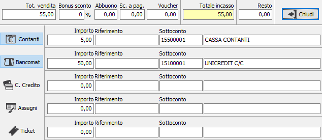
Se
attiva in configurazione la gestione incassi misti, sarà presente il pulsante
Misto tramite cui accedere alla finestra di registrazione incasso multiplo;
da questa finestra è possibile definire il metodo di pagamento agendo
sui pulsanti che possono non essere tutti presenti in base a quali tipologie
di incasso sono attive in configurazione e/o per la cassa utilizzata.
Premendo un pulsante il campo Importo viene valorizzato con l'importo
della vendita oppure il residuo se già impostato un altro tipo di incasso
con importo parziale; dove il pulsante è premuto è possibile intervenire
sull'importo, inserire una descrizione sul campo riferimento, per esempio
per gli assegni inserire il numero dell'assegno. Se attiva, a livello
di applicazione o utente, la possibilità di modificare i sottoconti utilizzati
per la registrazione contabile, sarà possibile intervenire anche sul campo
Sottoconto che sarà disponibile per la modifica.
La pressione sul pulsante Chiudi, se è stato definito l'incasso complessivo
riporta alla finestra precedente il valore dei campi Incasso e Resto consentendo
il salvataggio del movimento.
CHIUSURA MOVIMENTO: in questa sezione
si può decidere come effettuare la chiusura apponendo la spunta alle caselle
interessate.
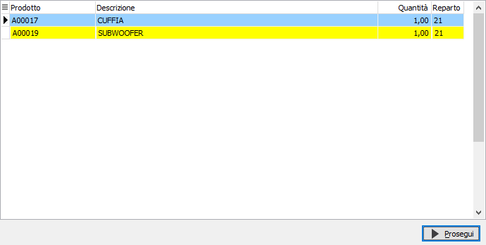
Se configurato sulla
causale è possibile stampare lo scontrino fiscale ed eventualmente anche
lo scontrino di cortesia (se opportunamente configurato) tramite un registratore
di cassa 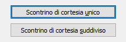
utilizzato
come stampante fiscale; per quanto riguarda lo scontrino di cortesia è
possibile anche scegliere gli articoli da includervi, come mostrato a
lato, è sufficiente selezionare le righe da includere sullo scontrino
di cortesia e premere Prosegui; per default le righe sono tutte selezionate.
Se la vendita comprende più di una riga viene richiesto anche come effettuare
la stampa dello scontrino di cortesia tramite la finestra mostrata a lato;
un unico scontrino o tanti scontrini quante sono le righe di vendita.
Se viene richiesto di generare una fattura
fiscale, un Ddt o una fattura di vendita ed il cliente corrisponde al
conto cassa presente in configurazione sarà necessario specificare il
cliente per l'intestazione nell'apposito campo. In caso di generazione
di Ddt, fattura di vendita, fattura fiscale o ricevuta fiscale, apponendo
la spunta sul campo 'Stampa Ddt/fattura/ricevuta',
sarà effettuata immediatamente anche la stampa.
Le caselle di spunta sono attive in relazione
al tipo di incasso ed a quanto specificato sulla causale di vendita; non
è consentito emettere ricevuta fiscale e stampare lo scontrino contemporaneamente.
La pressione sul pulsante Annulla determina
l'annullamento del totale dello scontrino, comprese eventuali promozioni
elaborate, e riporta alla sezione delle righe del movimento; la pressione
del pulsante Salva determina l'effettiva registrazione del movimento.
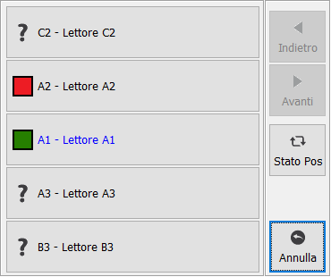
Se la gestione dei POS è attiva, campo "URL
servizio OSIVSGateway" della configurazione vendita al dettaglio
è valorizzato ed il servizio risulta attivo e licenziato correttamente,
al momento del salvataggio se richiesto il pagamento bancomat o carta
di credito (il pagamento Misto non è gestito), se sono presenti più lettori
POS associati alla cassa oppure un solo POS con stato non attivo si aprirà
la finestra di selezione lettori POS; se è presente un unico lettore POS
attivo non viene aperta nessuna finestra.
La finestra di selezione lettori POS mostra tanti pulsanti quanti sono
i lettori POS associati alla cassa, su ogni pulsante è presente un immagine
che ne identifica lo stato: indefinito , operativo
o non operativo ; dato che il controllo dello stato
richiede alcuni secondi viene effettuato solo selezionando un pulsante
con stato indefinito o se si preme il pulsante di richiesta stato; se
lo stato è diverso da indefinito, non sarà mai riletto in automatico fino
alla chiusura dell’applicazione; la selezione di un pulsante non operativo
non ha effetto. Come detto in precedenza sulla finestra è presente il
pulsante per fare il refresh dello stato dei lettori presenti
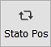
, in questo caso il controllo
dello stato è effettivo e si dovrà attendere il tempo necessario al reperimento
delle informazioni.
Se viene selezionato un POS operativo la finestra si chiude viene associato
il numero del lettore POS al movimento e viene inviato il comando di pagamento
al lettore POS selezionato; se il pagamento va a buon fine viene effettuato
il salvataggio altrimenti l’operazione si interrompe mostrando la motivazione
del rifiuto; se si esce dalla finestra di selezione POS con il pulsante
Annulla viene richiesto all’utente se proseguire comunque con la registrazione
senza alcun invio del pagamento al POS oppure non effettuare il salvataggio.
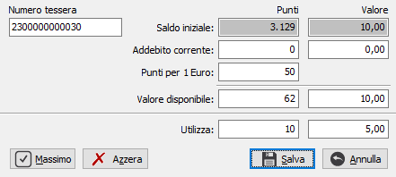
Se
presente una tessera fedeltà configurata per poter utilizzare il bonus
su richiesta sarà presente anche il pulsante mostrato a lato; premendo
il pulsante viene aperta la finestra dove è possibile selezionare, in
base al tipo di tessera, i bonus da utilizzare; il pulsante Massimo utilizza
tutto il credito, fino al massimo corrispondente all'importo della vendita;
il pulsante Azzera effettua l'azzeramento dei valori da utilizzare. Al
salvataggio la vendita viene diminuita, in base a come specificato in
configurazione.
 Se viene richiesta l'emissione di una fattura o Ddt
si abilita il pulsante per l'inserimento delle destinazioni; questa operazione
deve essere effettuata dopo aver inserito il cliente definitivo nel caso
il movimento fosse iniziato con il cliente cassa. è
possibile inserire la destinazione merce e se gestita anche la destinazione
amministrativa; nella finestra è presente anche un pulsante di Manutenzione
che consente l'inserimento o la variazione delle destinazioni.
Se viene richiesta l'emissione di una fattura o Ddt
si abilita il pulsante per l'inserimento delle destinazioni; questa operazione
deve essere effettuata dopo aver inserito il cliente definitivo nel caso
il movimento fosse iniziato con il cliente cassa. è
possibile inserire la destinazione merce e se gestita anche la destinazione
amministrativa; nella finestra è presente anche un pulsante di Manutenzione
che consente l'inserimento o la variazione delle destinazioni.
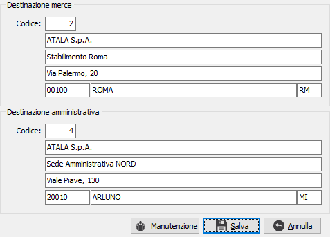 |
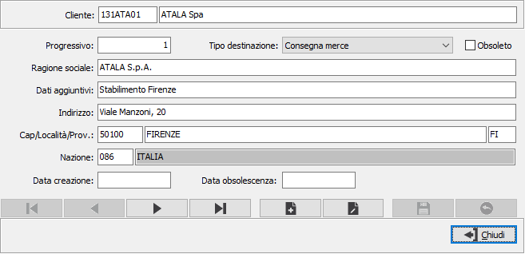 |
In fase di chiusura del movimento di vendita
nel caso in cui sia stata richiesta l’emissione della fattura ed il totale
della vendita sia inferiore al valore indicato nel parametro “Importo
massimo per fattura semplificata” presente nella configurazione del modulo
di aprire una finestra tramite la quale l’operatore può inserire il solo
codice fiscale o la sola partita Iva. Il valore inserito viene utilizzato
per cercare il cliente all’interno dell’anagrafica clienti, tramite il
tasto Ricerca. Se per il valore inserito (codice fiscale o partita Iva)
non esiste nessuna anagrafica viene data la possibilità di crearla, senza
alcun intervento da parte dell’operatore tramite il pulsante Inserisci;
se invece il cliente esiste vengono mostrati codice e ragione sociale
ed è possibile assegnarlo automaticamente alla vendita tramite il pulsante
Seleziona.
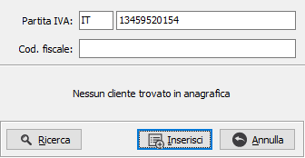 |
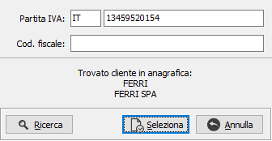 |